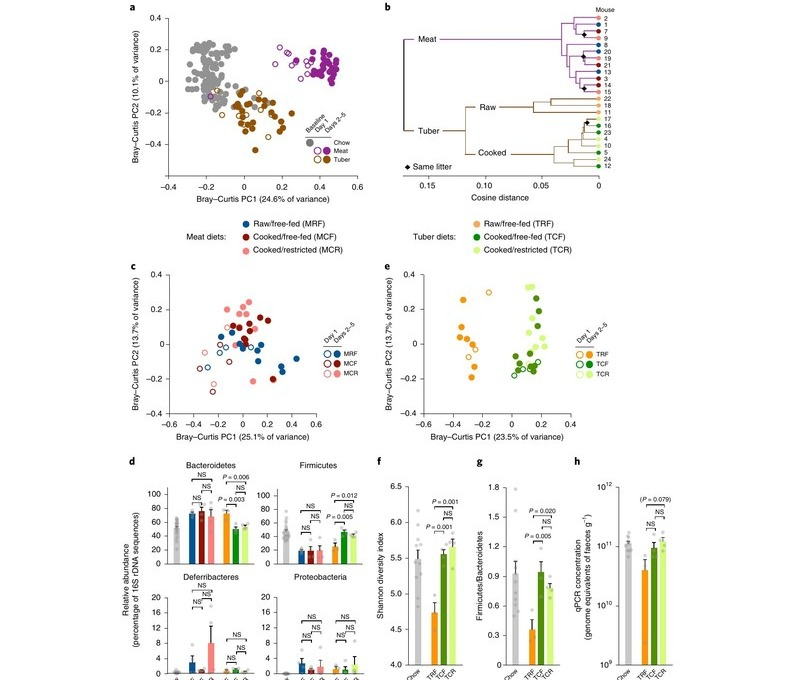
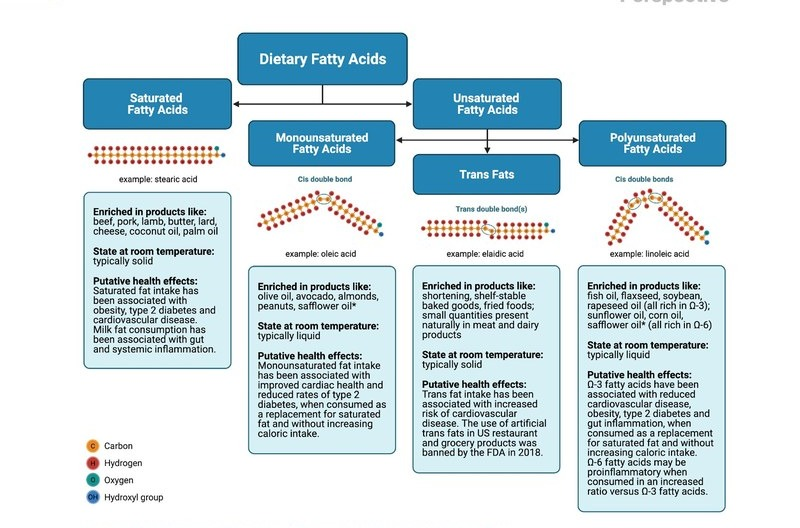
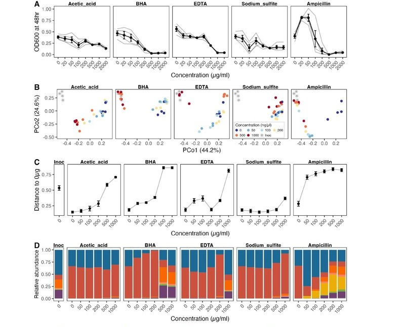
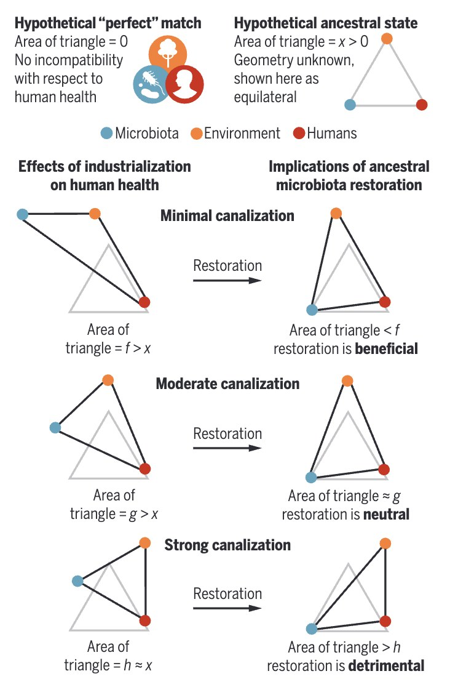
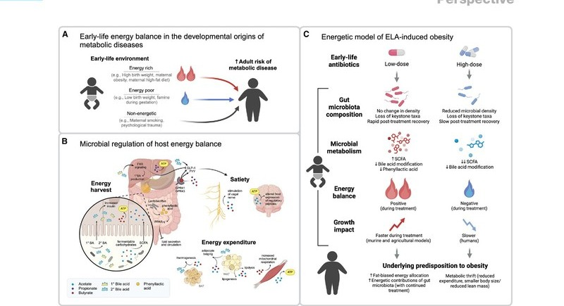
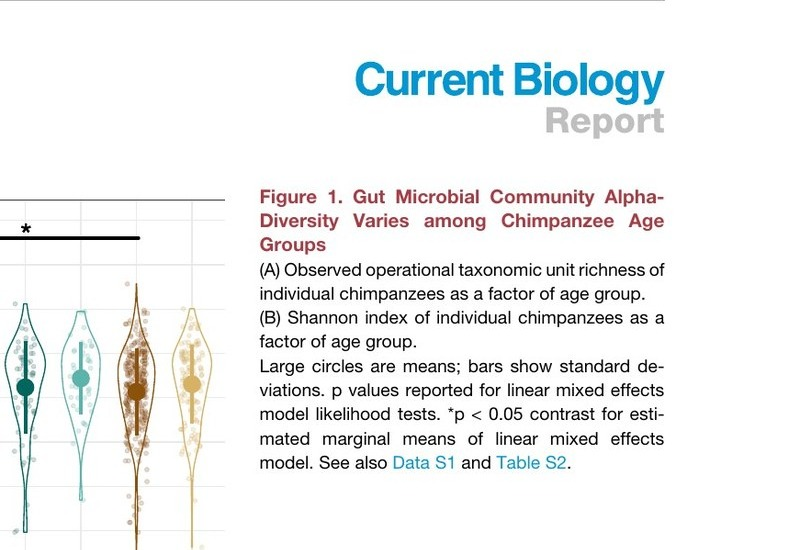
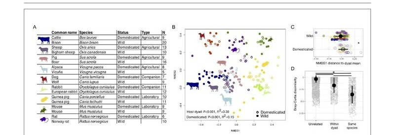
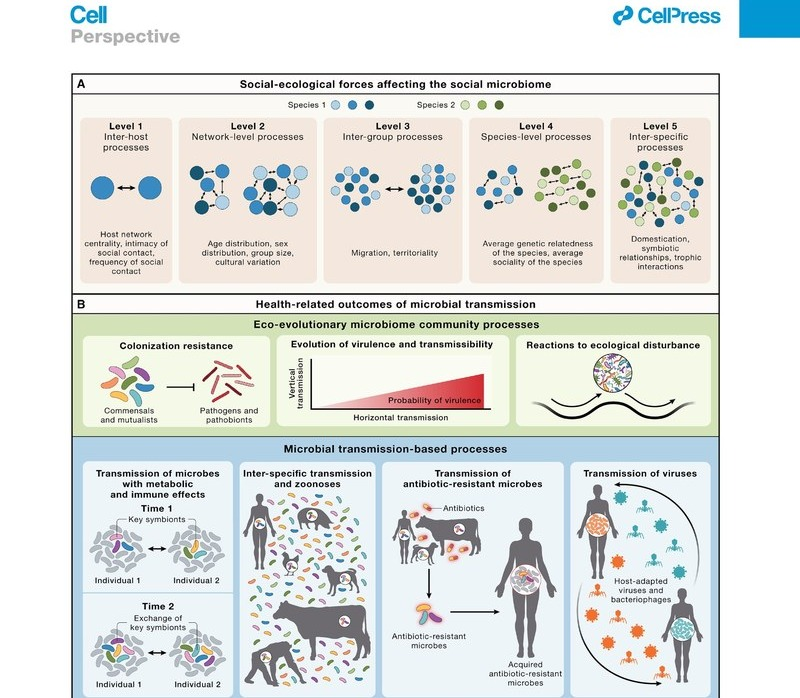

Research
Nutritional and microbial ecology across timescales
Converting food and nutrients into the energy that the body uses to grow, move, stay healthy, and reproduce is a fundamental aspect of animal biology. Our research builds on recent discoveries that energy metabolism depends on contributions from the trillions of microbes inhabiting the gastrointestinal tract. Specifically, we study how hosts and their resident gut microbes negotiate this metabolic interdependence over different timescales to produce and regulate the energy so central to life in the context of human biology.
In any ecosystem, changing the availability of food sources is expected to favor some species at the expense of others. Our work has established these dynamics in the gut: dietary changes reshape the composition and metabolic activities of the gut microbiome within hours. We have since demonstrated that aspects of diet that differ between humans and our closest primate relatives alter the metabolic contributions of the gut microbiome, including cooking, meat consumption, intentional fasting, and changes in the intake of various fats, polyphenols, and preservatives.
We have discovered microbiome-dependent caloric consequences of diet that mainstream methods of dietary energy valuation do not capture. For instance, we have found that the microbiome contributes to caloric consequences of putatively non-caloric compounds such as common preservatives and polyphenols, the caloric differentiation of putatively isocaloric saturated and polyunsaturated fats, and to net energetic gains attributable to cooking.
Key Publications



Genomic changes occur over generations, but microbial metagenomes can change within hours in response to new ecological conditions. We are interested in how the ecological plasticity of the gut microbiome affects the ability of humans to adapt to changing environments.
We have recently argued that the plasticity of the gut microbiome is an evolutionary double-edged sword: capable of conferring extra-genomic capacity for adaptation, but also affording opportunities for the microbiome to depart from profiles to which the human body has adapted, promoting mismatch-induced pathology. Our discoveries to date highlight the gut microbiome as a developmental signal of environmental quality, a dynamic energy buffer, and a persistent reservoir of health-relevant, human-associated microbes that are sensitive to, but not driven to extinction by, lifestyle change.
Key Publications


We are committed to exploring the pressures underpinning how and why the human gut microbiome is the way it is. Humans have a unique ecological history driven in part by our access to calorie-rich, highly omnivorous and processed diets, our changes in life history, and remarkable increases in our cooperation, social organization, and culture that have driven our demographic success.
By changing and diversifying our ecological niche, these innovations can be expected to have exerted unique pressures on the human gut microbiome not encountered in other species, leading to unique pathways of host-microbiome interaction. We have played a central role in hypothesizing and exploring these eco-evolutionary phenomena.
Key Publications


